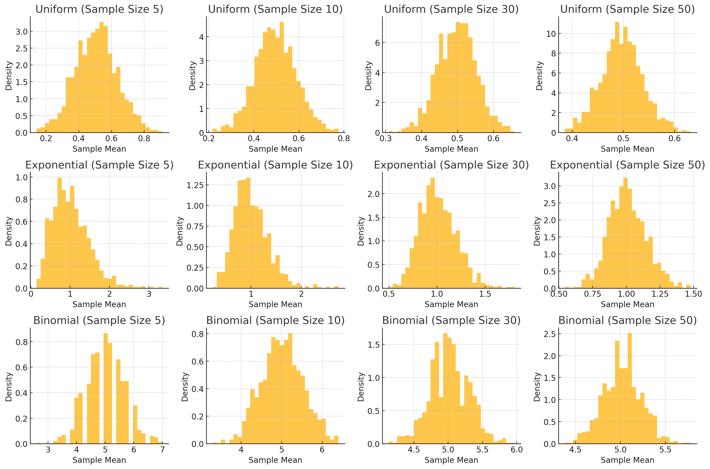

Problem 1
Simulating Sampling Distributions and Central Limit Theorem
1. Simulating Sampling Distributions
For this experiment, we will simulate three types of population distributions:
- Uniform Distribution: Every number within a specified range has an equal chance of being selected.
- Exponential Distribution: Describes the time between events in a Poisson process, characterized by a constant hazard rate.
- Binomial Distribution: Represents the number of successes in a fixed number of Bernoulli trials.
We will generate large datasets for each distribution to represent the population.
2. Sampling and Visualization
For each distribution, we will: - Randomly sample from the population. - Calculate the sample mean for different sample sizes (e.g., 5, 10, 30, 50). - Repeat the sampling process multiple times (e.g., 1,000 times) to create a sampling distribution of the sample mean.
Histograms of the sample means will be plotted for each sample size, and we will observe how the distribution of sample means converges toward a normal distribution as the sample size increases.
3. Parameter Exploration
In this section, we will explore: - Shape of the Original Distribution: How the original population distribution (uniform, exponential, binomial) influences the sampling distribution. - Sample Size: Larger sample sizes should lead to sample means that more closely resemble a normal distribution. - Population Variance: The spread of the sample means is influenced by the population's variance. A population with higher variance will result in sample means that spread out more.
4. Practical Applications
The Central Limit Theorem (CLT) has several important real-world applications:
- Estimating Population Parameters: Repeated sampling can help estimate population parameters like the population mean, even when the population distribution is not normal.
- Quality Control in Manufacturing: Sampling is used to monitor product quality, allowing manufacturers to detect deviations from expected values without testing every item.
- Predicting Outcomes in Financial Models: In finance, CLT helps to model aggregate outcomes (e.g., returns) over time, leading to normal approximations even if individual asset returns are not normally distributed.

4. Analysis of the Output:
-
Histograms for Uniform Distribution: For small sample sizes, you may still see a skewed distribution. As the sample size increases, the sampling distribution of the sample means will converge toward normality.
-
Histograms for Exponential Distribution: Since the original distribution is skewed, smaller sample sizes may show skewness. As the sample size increases, the sampling distribution of the mean becomes more normal.
-
Histograms for Binomial Distribution: For smaller sample sizes, the distribution may appear more discrete, but as the sample size increases, the sample mean’s distribution will approximate normality.